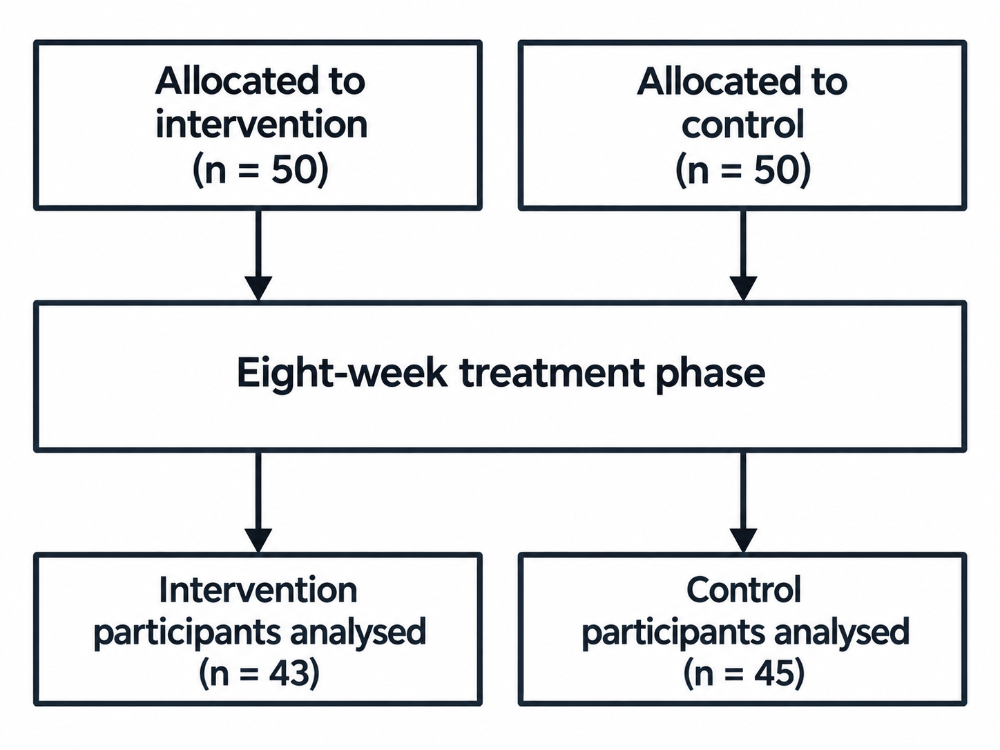

Flowchart parsing
Parsing is the final stage of the core pipeline. It takes flowchart images as input and extracts structured flowchart data.
The parsed data describes the nodes, their text and labels, the connections between nodes, and any additional text in the diagram.
Parse images from a directory
parse_imgs()
takes a directory of flowchart images and saves one JSON result per image
into a dedicated output directory.
from pathlib import Path
from flowde.parse_imgs import parse_imgs
from flowde.parsing_fns.openai_parse import make_openai_parse_fn
img_dir = Path("results/rotation/rotated_images")
save_dir = Path("results/parsing/full")
input_text = """
Parse this flowchart into structured data.
Assign consecutive node numbers starting at 1.
Capture each node's text, labels and outgoing connections.
Put text that does not belong to a node in additional_texts.
"""
parse_fn = make_openai_parse_fn(
input_text=input_text,
model="gpt-5.6-luna",
effort="medium",
)
responses = parse_imgs(
parse_fn=parse_fn,
img_dir=img_dir,
save_dir=save_dir,
max_concurrent_jobs=1,
)
By default,
parse_imgs()
processes *.png files inside img_dir, in sorted path order.
Subdirectories are not searched. The returned responses list contains one
Pydantic model per processed image: responses[0] contains the parsed data for
the first sorted image path, responses[1] for the second, and so on.
The example above uses OpenAI and requires the
OpenAI setup.
For parse_fn, you can use an OpenAI parser created with
make_openai_parse_fn(),
a Gemini parser created with
make_gemini_parse_fn(),
or your own parsing function.
The provider setup guide also covers
Azure OpenAI.
make_openai_parse_fn()
creates a parser for the complete flowchart format by default. You can instead
parse selected parts, such as node text or connections,
or use a custom output schema.
Note: concurrency
max_concurrent_jobs controls how many calls to parse_fn can run
concurrently and defaults to 10. Parallel execution in
parse_imgs()
uses threads, allowing concurrency to greatly exceed the CPU core count
when waiting for API responses. Choose max_concurrent_jobs based on your
API limits.
See the
parse_imgs()
and
make_openai_parse_fn()
API references for full details of all parameters.
Parsing results
Each image's result is saved as a JSON file with the same filename stem.
For example, paper-1_0.png produces paper-1_0.json:
results/parsing/full/
├── paper-1_0.json
├── paper-2_0.json
└── .flowde/
You can also inspect a result from the returned responses list:
print(responses[0].model_dump_json(indent=2))
.flowde records which images have been parsed, their results, parser
settings, image fingerprints and any supplied partial flowchart data. Flowde
uses this metadata to resume the run and detect changes to the inputs or saved
results.
Understand the flowchart format
Flowde represents a flowchart as a list of nodes and a list of additional texts.
A complete parsed flowchart has this structure:
from pydantic import BaseModel
class Node(BaseModel):
node_number: int
text: str
labels: list[str]
points_to: list[int]
class Flowchart(BaseModel):
nodes: list[Node]
additional_texts: list[str]
Each node represents one box or item in the flowchart.
The fields have the following meanings:
node_number: a unique identifier given to each node;text: the text inside the node;labels: text labels that apply to the node;points_to: the node numbers reached by following this node's outgoing arrows;additional_texts: text that is not assigned to a specific node, such as a caption.
The examples below show how this format represents the information in a diagram. These interpretation conventions are also used in the supplied CONSORT prompts.
Example 1: A basic flowchart

A complete parse of this diagram looks like:
{
"nodes": [
{
"node_number": 1,
"text": "Assessed for eligibility\n(n = 120)",
"labels": [],
"points_to": [2, 3]
},
{
"node_number": 2,
"text": "Allocated to intervention\n(n = 60)",
"labels": ["Allocation"],
"points_to": [4]
},
{
"node_number": 3,
"text": "Allocated to control\n(n = 60)",
"labels": ["Allocation"],
"points_to": [5]
},
{
"node_number": 4,
"text": "Completed follow-up\n(n = 55)",
"labels": ["Follow-up"],
"points_to": []
},
{
"node_number": 5,
"text": "Completed follow-up\n(n = 57)",
"labels": ["Follow-up"],
"points_to": []
}
],
"additional_texts": ["Figure 1. Example flowchart for demonstrating parsing."]
}
Example 2: Keeping branches separate
Some diagrams use one box to describe a step that applies separately to two or more branches. Here, the eight-week treatment phase applies independently to the intervention group and the control group:

The aligned arrows show two separate participant flows. Of the 50 participants allocated to intervention, 43 are analysed after the treatment phase. Of the 50 participants allocated to control, 45 are analysed. The shared treatment box avoids repeating the same text; the two groups do not merge during treatment.
If the parsed data used just one treatment node, both allocation nodes would point to that treatment node, and the treatment node would point to both analysis nodes. Those connections would incorrectly allow a path from intervention allocation to control analysis, and from control allocation to intervention analysis.
To preserve the intended participant flows, the parsed data represents the
treatment box as two nodes with the same text. Node 3 belongs to the
intervention branch, and node 4 belongs to the control branch:
{
"nodes": [
{
"node_number": 1,
"text": "Allocated to\nintervention\n(n = 50)",
"labels": [],
"points_to": [3]
},
{
"node_number": 2,
"text": "Allocated to\ncontrol\n(n = 50)",
"labels": [],
"points_to": [4]
},
{
"node_number": 3,
"text": "Eight-week treatment phase",
"labels": [],
"points_to": [5]
},
{
"node_number": 4,
"text": "Eight-week treatment phase",
"labels": [],
"points_to": [6]
},
{
"node_number": 5,
"text": "Intervention\nparticipants analysed\n(n = 43)",
"labels": [],
"points_to": []
},
{
"node_number": 6,
"text": "Control\nparticipants analysed\n(n = 45)",
"labels": [],
"points_to": []
}
],
"additional_texts": []
}
The intervention branch follows nodes 1 → 3 → 5, and the control branch
follows nodes 2 → 4 → 6. Neither branch has a connection to the other
group's analysis node.
Example 3: Advanced labels
A single box can contain several values, each with a label that applies only to that value. The parsed representation needs to preserve which label belongs to each value.

Representing the bottom-left box as one node could produce:
...
{
"node_number": 2,
"text": "42\n35",
"labels": [
"Follow-Up",
"26 weeks",
"52 weeks"
],
"points_to": []
},
...
This representation lists 26 weeks and 52 weeks as labels for a single node
containing both 42 and 35, without specifying which label belongs to which
value. The diagram's intended meaning is that 26 weeks applies to 42 and
52 weeks applies to 35. The parsed data needs to preserve those pairings.
Flowde's format supports two ways to represent those pairings:
Option 1: Join labels
You can join the timepoint labels into one label, keeping the timepoints in the same line order as the corresponding values:
...
{
"node_number": 2,
"text": "42\n35",
"labels": [
"Follow-Up",
"26 weeks\n52 weeks",
],
"points_to": []
},
...
The first line, 26 weeks, corresponds to 42; the second line, 52 weeks,
corresponds to 35.
Option 2: Split nodes
You can instead represent the two follow-up measurements as separate nodes, each with its own value and timepoint label. The bottom-left box becomes:
...
{
"node_number": 2,
"text": "42",
"labels": [
"Follow-Up",
"26 weeks"
],
"points_to": [4]
},
...
{
"node_number": 4,
"text": "35",
"labels": [
"Follow-Up",
"52 weeks"
],
"points_to": []
},
...
The connection from node 2 to node 4 represents
the progression between those follow-up measurements.
Resume parsing
To continue an unfinished parsing run whose results are saved in save_dir,
you can set on_existing="resume":
responses = parse_imgs(
parse_fn=parse_fn,
img_dir=img_dir,
save_dir=save_dir,
max_concurrent_jobs=1,
on_existing="resume",
)
The .flowde directory inside save_dir stores the parsing run's state.
Flowde uses these records to resume unfinished work and check the integrity of the run.
Resume raises an error if the parser's settings have changed, or if previously
parsed input images, their supplied partial flowchart data or saved results
have changed.
To use different settings or partial flowchart data, you can start a run in a
new save_dir or replace the previous run with on_existing="overwrite".
See managing runs for the full rules.
Parse parts separately
Splitting parsing into separate tasks can improve parsing accuracy by allowing the model to focus on one part of the flowchart at a time and use earlier results as context for later requests. You can also inspect intermediate results.
Important
node_text must be parsed before or together with labels or flow
so the parser knows which node numbers to use for labels and connections.
If node text was parsed in an earlier run, pass the saved node-text
directory as nodes_dir.
1. Parse node text
from pathlib import Path
from flowde.parse_imgs import parse_imgs
from flowde.parsing_fns.openai_parse import make_openai_parse_fn
img_dir = Path("results/rotation/rotated_images")
parts_dir = Path("results/parsing")
nodes_fn = make_openai_parse_fn(
input_text=(
"Parse the text of every node. Use consecutive node numbers starting "
"at 1 and keep separate flowchart branches separate."
),
model="gpt-5.6-luna",
effort="medium",
parts_to_parse={"node_text"},
)
nodes = parse_imgs(
parse_fn=nodes_fn,
img_dir=img_dir,
save_dir=parts_dir / "node_text",
max_concurrent_jobs=1,
)
The parts_to_parse={"node_text"} argument tells
make_openai_parse_fn()
to create a parser that returns only node numbers and text. For example, a
two-node diagram could produce:
{
"nodes": [
{ "node_number": 1, "text": "Assessed for eligibility (n = 120)" },
{ "node_number": 2, "text": "Randomised (n = 100)" }
]
}
node_text is the parsing-part name. nodes is the JSON field holding the
node objects. This example saves the node-text JSON files in
results/parsing/node_text.
You can choose from four parsing parts:
parts_to_parse value |
Fields in the result |
|---|---|
"node_text" |
nodes, containing node_number and text |
"labels" |
nodes, containing node_number and labels |
"flow" |
nodes, containing node_number and points_to |
"additional_texts" |
The top-level additional_texts list |
You can request several parts together, such as {"node_text", "labels"}.
Without parts_to_parse or a custom result_structure, the OpenAI and Gemini
parser factories request all four parts.
2. Parse flow using the saved nodes
flow_fn = make_openai_parse_fn(
input_text=(
"Find the outgoing connections for every supplied node. "
"Use the supplied node numbers without changing them."
),
model="gpt-5.6-luna",
effort="medium",
parts_to_parse={"flow"},
)
flow = parse_imgs(
parse_fn=flow_fn,
img_dir=img_dir,
save_dir=parts_dir / "flow",
nodes_dir=parts_dir / "node_text",
max_concurrent_jobs=1,
)
For each input image, nodes_dir supplies the node numbers and text from the
matching JSON file in results/parsing/node_text. The parser receives that
saved data alongside the image so the prompt can ask for outgoing connections
using the existing node numbers.
parts_to_parse={"flow"} tells the parser to parse only the outgoing connections
for each node. For example:
{
"nodes": [
{ "node_number": 1, "points_to": [2] },
{ "node_number": 2, "points_to": [] }
]
}
The flow JSON files are saved in results/parsing/flow.
3. Parse labels and additional text
Likewise, you can parse labels with parts_to_parse={"labels"} and additional
text with parts_to_parse={"additional_texts"}. You can pass previously parsed
parts as context through the following
parse_imgs()
parameters:
| Parameter | Directory containing |
|---|---|
nodes_dir |
Previously parsed nodes |
labels_dir |
Previously parsed labels |
flow_dir |
Previously parsed flow |
additional_texts_dir |
Previously parsed additional text |
Matching images and parsed parts
Each parsed part is saved as a JSON file with the same filename stem as the
source image. For example, the parts parsed from paper-1_0.png are saved as
paper-1_0.json in each part's directory:
results/
├── rotation/
│ └── rotated_images/
│ ├── paper-1_0.png
│ └── paper-2_0.png
└── parsing/
├── node_text/
│ ├── paper-1_0.json
│ ├── paper-2_0.json
│ └── .flowde/
├── flow/
│ ├── paper-1_0.json
│ ├── paper-2_0.json
│ └── .flowde/
├── labels/
│ ├── paper-1_0.json
│ ├── paper-2_0.json
│ └── .flowde/
└── additional_texts/
├── paper-1_0.json
├── paper-2_0.json
└── .flowde/
Combine the parsed parts
You can combine the saved node text, labels, connections and additional text into one JSON file per image:
from flowde.combine_parsed_parts import combine_parsed_parts
combined = combine_parsed_parts(
nodes_dir=parts_dir / "node_text",
flow_dir=parts_dir / "flow",
labels_dir=parts_dir / "labels",
additional_texts_dir=parts_dir / "additional_texts",
save_dir=parts_dir / "combined",
)
To replace an earlier set of combined results, you can add
on_existing="overwrite". See the
combine_parsed_parts()
API reference for full details of the parameters and validation rules.
Use a custom output schema
You can request a different JSON format by defining a Pydantic schema. This example asks for a title and a count of the diagram's boxes:
from pydantic import BaseModel, ConfigDict
class DiagramSummary(BaseModel):
model_config = ConfigDict(extra="forbid")
title: str
number_of_boxes: int
summary_fn = make_openai_parse_fn(
input_text="Give the diagram a short title and count its boxes.",
model="gpt-5.6-luna",
effort="medium",
result_structure=DiagramSummary,
)
result_structure=DiagramSummary tells
make_openai_parse_fn()
to create a parser with title and number_of_boxes in its results. A custom
schema replaces the standard flowchart format, so result_structure and
parts_to_parse cannot be supplied together. See the
factory API reference
for the parameters.
Flowde's parsing benchmark expects the standard flowchart format, so arbitrary
custom results such as DiagramSummary need their own evaluation method.
Bring your own parsing function
You can write your own parser and pass it to
parse_imgs()
as parse_fn. See the
custom parsing tutorial
for the requirements your function must meet and a complete working example.
Next step
You can benchmark the parsed results against manually annotated ground truth.